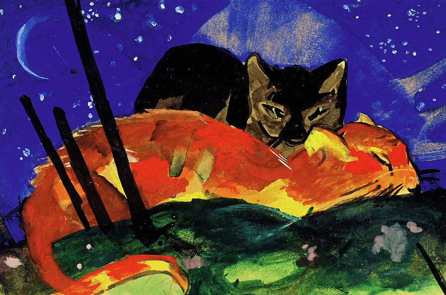

Biografía
Hijo del pintor paisajista Wilhelm Marc y la institutriz Sophie Maurice realizó estudios de filosofía y teología influenciado por su madre; quien era una fervorosa creyente, antes de iniciar sus estudios de arte en la Academia de Bellas Artes de Múnich a la que ingresó en 1890 siguiendo los pasos de su padre. Estudiando en esta academia tuvo como maestros a Gabriel von Halk y Wilhelm von Diez.
Sus primeras creaciones fueron de estilo paisajista, pero en su viaje a París en 1903 descubre el impresionismo y, sobre todo, la obra de Vincent Van Gogh y Paul Gauguin, por cuyas obras sentía especial atracción. En 1910, hizo amistad con los pintores August Macke y Wassily Kandinsky, con quienes fundó el movimiento artístico Der Blaue Reiter.
Dos gatos, tarjeta postal para Lily Klee Múnich
Título: Two Cats, postcard from Sindelsdorf to Lily Klee Munich
Creador: Franz Marc
Fecha: 1913/1913
Dimensiones físicas: w14 x h9 cm (without frame)
Origen: ahlers collection
Tipo: painting
Enlace externo: www.franz-marc-museum.de